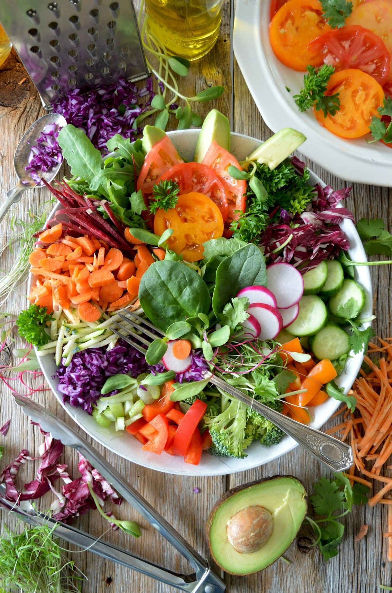
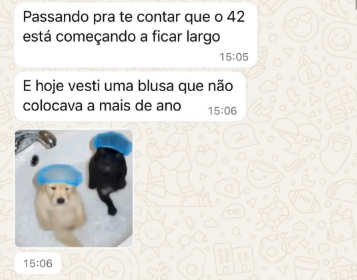
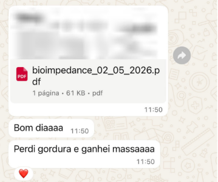
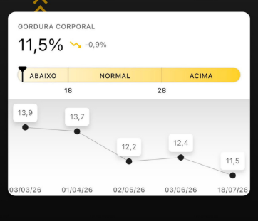

Resultado não precisa ser complicado. Precisa ser possível.
Aprenda a fazer o básico bem feito dentro da vida que você já tem. Planos 100% individualizados para emagrecimento, hipertrofia, recomposição corporal e performance na corrida.
Método BASIC by Amanda Ribeiro
"Você não precisa mudar sua vida para fazer uma dieta caber nela. A sua alimentação é que precisa caber na sua vida."

Comida Real
Alimentos que fazem parte do seu dia a dia, sem dependência de modismos "fitness" ou receitas complexas.
Rotina Possível
Estratégia desenhada a partir da vida que você já tem, respeitando seus horários, trabalho e treinos.
Escolhas Conscientes
Conhecimento e autonomia para que você saiba o que e por que está comendo, em qualquer ambiente.
Consistência & Sustentabilidade
O que transforma não é o que você faz por poucos dias, mas o que consegue sustentar a longo prazo.
Avaliação Física por meio de 4 Métodos (Presencial)
Opções de Acompanhamento
Formatos planejados para se adequar ao seu objetivo, tempo de evolução e estilo de vida.
Avaliação Física Avulsa & Suporte Contínuo
Disponível também avaliação física avulsa (Bioimpedância InBody + Dobras + Circunferências + Fotos). Todos os planos incluem suporte diário via WhatsApp com alterações livres durante todo o período contratado.
Evolução dos Pacientes
Transformações consistentes alcançadas aplicando o básico bem feito na vida real.



Você não precisa escolher entre ter resultado e viver a sua vida.
Descubra como o Método BASIC pode descomplicar sua alimentação e gerar os resultados que você sempre buscou. Agende sua consulta presencial ou online.